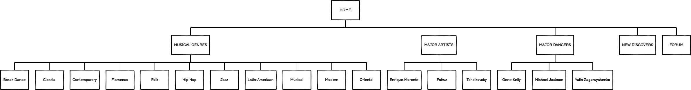
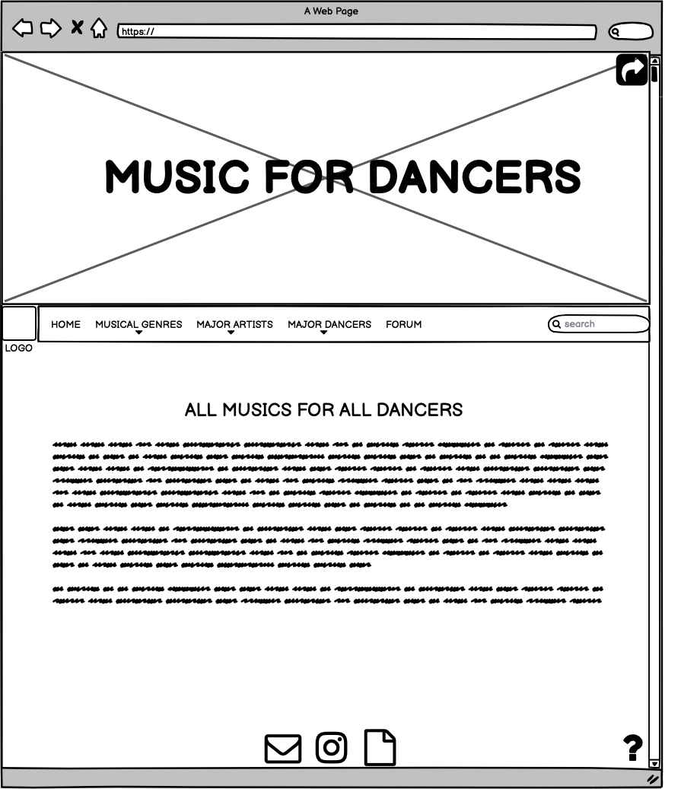
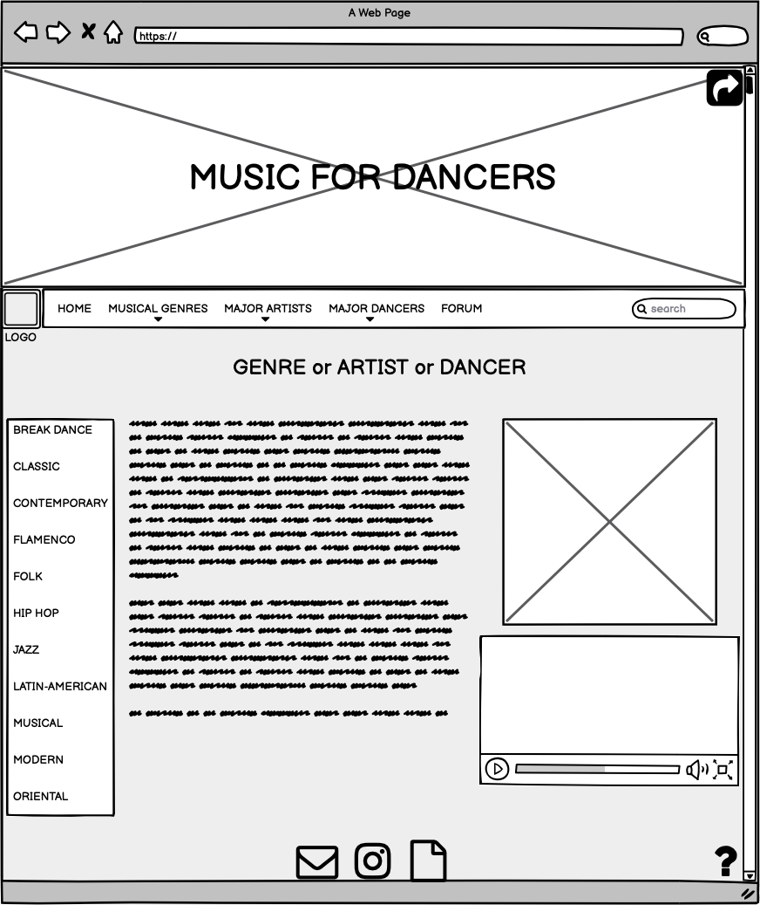

Abstract
Il sito MusicForDancers è stato creato con l’intenzione di rendere accessibili ai ballerini tutti i brani di cui hanno bisogno, suddividendoli secondo tipologie. Attraverso questa piattaforma si vuole indirizzare, facilmente, l’insegnante o il ballerino sul proprio genere e offrire degli spunti per sperimentare nuova musica. La fascia di riferimento del sito sono i giovani ballerini e gli insegnanti di danza, che utilizzano più frequentemente i siti web per ricercare la musica di cui necessitano. Il valore aggiunto di MusicForDancers è la praticità di una ricerca diretta, nonché il costante aggiornamento delle playlist e delle liste di artisti emergenti.
PROJECT MANAGEMENT PLAN
BENCHMARKING
OBIETTIVI
Gli obiettivi di MusicForDancers sono: aiutare ballerini, professionisti e non, ed insegnanti di danza a trovare la musica di cui hanno bisogno in maniera rapida; fornire delle informazioni sulla musica o l’artista su cui si sta facendo una ricerca; dare ispirazione ai ballerini mettendo a disposizione video o playlist musicali a seconda del genere e mantenere aggiornati sulle novità nel campo della musica e della danza.
TARGET UTENTE
Il sito web è indirizzato ai ballerini e agli aspiranti tali della fascia Under35, ma anche agli insegnanti la cui fascia corrisponde agli Over20 e agli appassionati di danza di tutte le età.
COMPETITORS
Per questa tipologia di siti web i competitors sono numerosi. Tra i più importanti troviamo sicuramente piattaforme come Spotify o YouTube, la prima a pagamento, la seconda gratuita, che coinvolgono l’aspetto della ricerca musicale in maniera generale. Tra i siti più specifici, invece, risultano essere primi in ricerca: Superprof, un blog che ha scritto un articolo sulle principali hit e i più comuni stili di ballo da applicare durante le lezioni di danza, e Danceline, che fornisce musiche per le lezioni di danza classica e ha una sezione dove si possono trovare tutti gli aggiornamenti su questa tipologia di danza.
STRUTTURA E LAYOUT
ARCHITETTURA DEL SITO

WIREFRAME
Home,Documentazione

Musical Genres, Major Artists, Major Dancers

Break Dance,etc.;Fairuz,etc.;Gene Kelly,etc.

LOOK AND FEEL
Il logo è stato realizzato con VistaCreate ed illustra l’argomento su cui è basato il sito. Il font utilizzato è “Lobster-Two” di Google Fonts sia per i titoli che per il testo, l’unica variazione riguarda la font-size. Il font nei commenti è di default. Il colore del Body che è stato scelto, ovvero (rgba= 47,44,126, 0.63), è stato abbinato all’immagine in header, che presenta come background color il colore #444. Per lo sfondo della Navbar, lo sfondo del logo e le list-group è stato utilizzato il colore #5a588e, mentre per le icone del logo, le altre icone della pagina e tutto il testo( titoli inclusi) il colore utilizzato è il bianco (255,255,255,1), per far sì che risaltasse sul colore del background.
LINGUAGGI E STRUMENTI
I linguaggi utilizzati per il sito sono HTML e CSS. Gli strumenti web a cui ho attinto per la progettazione del sito sono Google Fonts per il font dei titoli e del testo; Bootstrap per la Navbar e l’icona della chat nella pagina Forum; W3 per la sezione commenti e i video; Fontawsome per le icone: intsgram, documentazione, share , mail; Balsamiq per l’architettura del sito e i wireframe. Come editor di testo ho utilizzato Sublime text e Pages del Mac, mentre per le immagini ho utilizzato Pexels, Pixaby e Google Immagini.I contenuti informativi del sito sono stati, in parte, tratti da Wikipedia. Per la creazione delle playlist ho utilizzato Spotify, mentre per i video ho utilizzato YouTube: Per la pubblicazione del sito ho utilizzato GitHub, mentre per il monitoraggio dei risultati ho utilizzato Google Analytics.
COMMUNICATION STRATEGY
BACKGROUND
Attraverso un’analisi dei principali competitors, ovvero, le applicazioni e i siti web ho avuto modo di notare alcuni pro e alcuni contro degli stessi. Sicuramente, i pro delle prime sono la disponibilità per ogni device, l’ampio panorama su cui poter effettuare una ricerca e il costante aggiornamento. Si tratta, infatti, di risultati importanti da cui il sito prende ispirazione e di cui si è servito. Per i secondi, in particolare per Danceline, ho notato l’attenzione all’aggiornamento tramite le news e l’attenzione all’ argomento che è trattato dettagliatamente. I contro dei primi sono relativi, in quanto si tratta semplicemente di un’ampiezza di panorama che spesso non fornisce giusti risultati, soprattutto per quanto riguarda musiche tradizionali o più antiche. I contro dei secondi invece sono: l’eccessiva specificità e l’impossibilità di fruizione per tutte le tipologie di ballerini. Un aspetto su cui è, invece, basato il mio sito, che combina un costante aggiornamento con informazioni e con la possibilità di commentare, attraverso un Forum, contribuendo al miglioramento del sito stesso.
OBIETTIVI COMUNICATIVI
L’obiettivo comunicativo del sito è quello di permettere ai ballerini e agli insegnanti di scoprire la musica, da loro già ascoltata o al primo ascolto, fornendo playlist da poter scaricare e video e informazioni da poter condividere con chiunque vogliano.
TARGET AUDIENCE E MESSAGGIO
Il sito si rivolge a diversi target audience, in particolare, ai ballerini della fascia Under35, agli insegnanti di danza della fascia Over20 e agli appassionati di danza di tutte le età. Gli appassionati di danza di tutte le età comprendono il target secondario e costituiscono l’utente casuale, che potrebbe imbattersi nel sito durante una ricerca sul web. Il target principale, come il secondario viene raggiunto tramite i social, la newsletter e la creazione di un profilo instagram.
PROMOZIONE
Il sito è stato promosso attraverso la creazione di un account Instagram, con rispettivi post e stories e con condivisione degli stessi su altri profili tramite Instagram. Vi è inoltre l’intenzione di aprire una newsletter a cui ci si potrà iscrivere.
VALUTAZIONE DEI RISULTATI